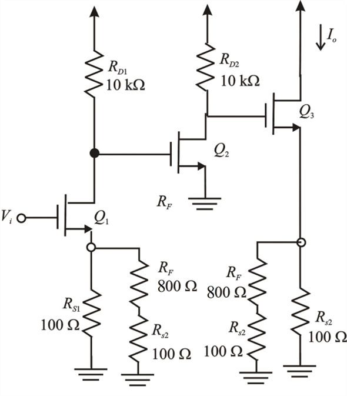

Step 1:
Refer to the circuit diagram of feedback triple MOSFET in Figure P10.45 in the textbook.
(a)
The closed-loop trans-conductance of the amplifier,
The trans-conductance of the MOSFETs,
Write the formula for feedback factor, to calculate the resistance,  .
.
Select,
Equate these two equations.
Substitute the known values in this equation.
Thus, the value of feedback resistance is .
Step 2:
(b)
Draw the A-circuit is shown in Figure 2.

Figure 2
Step 3:
Write the formula for gain of the amplifier.
Calculate the ratio, .
Step 4:
Step 5:
Step 6:
Substitute the calculated ratios in the equation for gain of the amplifier.
Thus, the value of A in the A circuit is .
Step 7:
(c)
Calculate the value of  .
.
Thus, the value of is  .
.
Calculate the gain with feedback of the amplifier.
Thus, the gain with feedback of the amplifier  is .
is .
Step 8:
The designed value of  is 0.1 A/V
is 0.1 A/V
Calculate the percentage difference of the gain with feedback of the amplifier.
Thus, the percentage difference of the gain with feedback of the amplifier is .
The resistance must be decreased to make exactly equal to 0.1 A/V
Step 9:
(d)
It is given that the output resistance,
Calculate the output resistance, .

Calculate the resistance, .
Thus,
Now substitute the calculated values in the output resistance equation.
Thus, the output resistance of the amplifier is .
Step 10:
(e)
Write the formula for closed-loop gain.
Calculate the ratio,
Step 11:
Calculate the ratio, .
Calculate the ratio, .
Step 12:
Now substitute the calculated ratios in the closed-loop voltage gain.
Thus, the closed-loop gain of the amplifier is .
Step 13:
(f)
Calculate the feedback factor.
Calculate the output resistance, .
Calculate the resistance,  .
.

Now substitute this calculated value in the output resistance equation.
Thus, the closed-loop output resistance of the amplifier is .